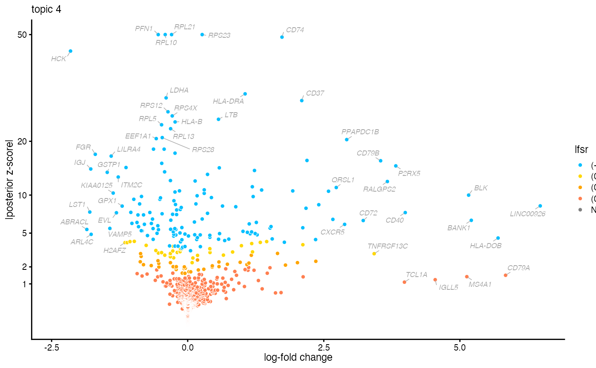

Implements methods for differential expression analysis using a topic model. These methods are motivated by gene expression studies, but could have other uses, such as identifying “key words” for topics.
de_analysis( fit, X, s = rowSums(X), pseudocount = 0.01, fit.method = c("scd", "em", "mu", "ccd", "glm"), shrink.method = c("ash", "none"), lfc.stat = "le", control = list(), verbose = TRUE, ... ) de_analysis_control_default()
| fit | An object of class “poisson_nmf_fit” or
“multinom_topic_model_fit”. If a Poisson NMF fit is provided
as input, the corresponding multinomial topic model fit is
automatically recovered using |
|---|---|
| X | The n x m counts matrix. It can be a sparse matrix (class
|
| s | A numeric vector of length n determining how the rates are
scaled in the Poisson models. See “Details” for guidance on
the choice of |
| pseudocount | Observations with this value are added to the counts matrix to stabilize maximum-likelihood estimation. |
| fit.method | Method used to fit the Poisson models. Note that
|
| shrink.method | Method used to stabilize the posterior mean
LFC estimates. When |
| lfc.stat | The log-fold change statistics returned:
|
| control | A list of parameters controlling behaviour of the optimization and Monte Carlo algorithms. See ‘Details’. |
| verbose | When |
| ... | When |
A list with the following elements:
The log-fold change estimates.
Posterior mean LFC estimates.
Lower limits of estimated HPD intervals.
Upper limits of estimated HPD intervals.
z-scores for posterior mean LFC estimates.
-log10 two-tailed p-values obtained from the
z-scores. When shrink.method = "ash", this is NA, and
the s-values are returned instead (see below).
s-values returned by
ash. s-values are analogous to q-values, but
based on the local false sign rate; see Stephens (2016).
When shrink.method = "ash" only, this output
contains the estimated local false sign rates.
When shrink.method = "ash" only, this output
contains the ash return value (after removing
the "data", "result" and "call" list
elements).
Maximum-likelihood estimates of the Poisson model parameters.
Maximum-likelihood estimates of the null model parameters.
A vector containing the Metropolis acceptance ratios from each MCMC run.
The methods are based on the Poisson model
$$x_i ~ Poisson(\lambda_i),$$ in which the Poisson rates are
$$\lambda_i = \sum_{j=1}^k s_i l_{ij} f_j,$$ the \(l_{ik}\)
are the topic proportions and the \(f_j\) are the unknowns to be
estimated. This model is applied separately to each column of
X. When \(s_i\) (specified by input argument s) is
equal the total count in row i (this is the default), the Poisson
model will closely approximate a binomial model of the count data,
and the unknowns \(f_j\) will approximate binomial
probabilities. (The Poisson approximation to the binomial is most
accurate when the total counts rowSums(X) are large and the
unknowns \(f_j\) are small.) Other choices for s are
possible, and implement different normalization schemes.
To allow for some flexibility, de_analysis allows for the
log-fold change to be measured in several ways.
One option is to compare against the probability under the null
model: \(LFC(j) = log2(f_j/f_0)\), where \(f_0\) is the single
parameter in the Poisson model \(x_i ~ Poisson(\lambda_i)\) with
rates \(\lambda_i = s_i f_0\). This LFC definition is chosen with
lfc.stat = "vsnull".
Another option is to compare against a chosen topic, k: \(LFC(j)
= log2(f_j/f_k)\). By definition, \(LFC(k)\) is zero, and
statistics such as z-scores and p-values for topic k are set to
NA. This LFC definition is selected by setting
lfc.stat = k.
A final option (which is the default) computes the “least
extreme” LFC, defined as \(LFC(j) = log2(f_j/f_k)\) such that
\(k\) is the topic other than \(j\) that gives the ratio
\(f_j/f_k\) closest to 1. This option is chosen with
lfc.stat = "le".
We recommend setting shrink.method = "ash", which uses the
“adaptive shrinkage” method (Stephens, 2016) to improve
accuracy of the posterior mean estimates and z-scores. We follow
the settings used in lfcShrink from the DESeq2 package, with
type = "ashr".
Note that all LFC statistics are defined using the base-2 logarithm following the conventioned used in differential expression analysis.
The control argument is a list in which any of the
following named components will override the default optimization
algorithm settings (as they are defined by
de_analysis_control_default):
numiterMaximum number of iterations performed in
fitting the Poisson models. When fit.method = "glm", this is
passed as argument maxit to the glm function.
minvalA small, positive number. All topic
proportions less than this value and greater than 1 - minval
are set to this value.
tolControls the convergence tolerance for fitting
the Poisson models. When fit.method = "glm", this is passed
as argument epsilon to function glm.
conf.levelThe size of the highest posterior density (HPD) intervals. Should be a number greater than 0 and less than 1.
nsNumber of Monte Carlo samples simulated by random-walk MCMC for estimating posterior LFC quantities.
rwThe standard deviation of the normal density used to propose new states in the random-walk MCMC.
epsA small, non-negative number added to the terms inside the logarithms to avoid computing logarithms of zero.
ncNumber of threads used in the multithreaded
computations. Note that the multithreading relies on forking hence
is not available on Windows; will return an error on Windows
unless nc = 1. See mclapply for
details.
nsplitThe number of data splits used in the
multithreaded computations (only relevant when nc > 1). More
splits increase the granularity of the progress bar, but can also
slow down the mutithreaded computations by introducing more
overhead in the call to pblapply.
Stephens, M. (2016). False discovery rates: a new deal. Biostatistics 18(2), kxw041. https://doi.org/10.1093/biostatistics/kxw041
Zhu, A., Ibrahim, J. G. and Love, M. I. (2019). Heavy-tailed prior distributions for sequence count data: removing the noise and preserving large differences. Bioinformatics 35(12), 2084–2092.
# Perform a differential expression (DE) analysis using the previously # fitted multinomial topic model. Note that the de_analysis call could # take several minutes to complete. set.seed(1) data(pbmc_facs) de <- de_analysis(pbmc_facs$fit,pbmc_facs$counts)#> Fitting 16791 Poisson models with k=6 using method="scd". #> Computing log-fold change statistics from 16791 Poisson models with k=6.#>#>#>#>#>#>#>#>#>#>#>#>#>#>#>#>#>#>#>#>#>#>#>#>#>#>#>#>#>#>#>#>#>#>#>#>#>#>#>#>#>#>#>#>#>#>#>#>#>#>#>#>#>#>#>#>#>#>#>#>#>#>#>#>#>#>#>#>#>#>#>#>#>#>#>#>#>#>#>#>#>#>#>#>#>#>#>#>#>#>#>#>#>#>#>#>#>#>#>#>#>#>#>#>#>#>#>#>#>#>#>#>#>#>#>#>#>#>#>#>#>#>#>#>#>#>#>#>#>#>#>#>#>#>#>#>#>#>#>#>#>#>#>#>#>#>#>#>#>#>#>#>#>#>#>#>#>#>#>#>#>#>#>#>#>#>#>#>#>#>#>#>#>#>#>#>#>#>#>#>#>#>#>#>#>#>#>#>#>#>#>#>#>#>#>#>#>#>#>#>#>#>#>#>#>#>#>#>#>#>#>#>#>#>#>#>#>#>#>#>#>#>#>#>#>#>#>#>#>#>#>#>#>#>#>#>#>#>#>#>#>#>#>#>#>#>#>#>#>#>#>#>#>#>#>#>#>#>#>#>#>#>#>#>#>#>#>#>#>#>#>#>#>#>#>#>#>#>#>#>#>#>#>#>#>#>#>#>#>#>#>#>#>#>#>#>#>#>#>#>#>#>#>#>#>#>#>#>#>#>#>#>#>#>#>#>#>#>#>#>#>#>#>#>#>#>#>#>#>#>#>#>#>#>#>#>#>#>#>#>#>#>#>#>#>#>#>#>#> Stabilizing posterior log-fold change estimates using adaptive shrinkage.# Compile the DE analysis results for topic 4 into a table, and # rank the genes by the posterior mean log-fold change, limiting to # DE genes identified with low lfsr ("local false sign rate"). k <- 4 dat <- data.frame(postmean = de$postmean[,k], z = de$z[,k], lfsr = de$lfsr[,k]) rownames(dat) <- with(pbmc_facs$genes,paste(symbol,ensembl,sep = "_")) dat <- subset(dat,lfsr < 0.01) dat <- dat[order(dat$postmean,decreasing = TRUE),] # Genes at the top of this ranking are genes that are much more # highly expressed in the topic compared to other topics. head(dat,n = 10)#> postmean z lfsr #> LINC00926_ENSG00000247982 6.476 8.406 7.979e-15 #> HLA-DOB_ENSG00000241106 5.701 4.479 2.617e-04 #> BANK1_ENSG00000153064 5.210 6.491 6.920e-09 #> BLK_ENSG00000136573 5.160 9.992 2.426e-21 #> CD40_ENSG00000101017 3.996 7.486 9.641e-12 #> P2RX5_ENSG00000083454 3.823 15.002 4.233e-48 #> RALGPS2_ENSG00000116191 3.668 12.199 1.112e-31 #> CD79B_ENSG00000007312 3.544 15.986 7.460e-55 #> TNFRSF13C_ENSG00000159958 3.425 3.009 8.032e-03 #> CD72_ENSG00000137101 3.224 6.465 2.383e-09# The genes at the bottom of the ranking are genes that are much less # expressed in the topic. tail(dat,n = 10)#> postmean z lfsr #> KIAA0125_ENSG00000226777 -1.369 -10.313 0.000e+00 #> LILRA4_ENSG00000239961 -1.405 -16.907 0.000e+00 #> VAMP5_ENSG00000168899 -1.430 -5.527 3.009e-06 #> GSTP1_ENSG00000084207 -1.478 -13.814 0.000e+00 #> FGR_ENSG00000000938 -1.698 -17.268 0.000e+00 #> ARL4C_ENSG00000188042 -1.773 -4.868 3.512e-05 #> IGJ_ENSG00000132465 -1.781 -14.424 0.000e+00 #> LST1_ENSG00000204482 -1.798 -7.559 2.202e-12 #> ABRACL_ENSG00000146386 -1.853 -5.407 1.859e-06 #> HCK_ENSG00000101336 -2.153 -44.484 0.000e+00# Create a volcano plot from the DE results for topic 4. volcano_plot(de,k = k,ymax = 50,labels = pbmc_facs$genes$symbol)